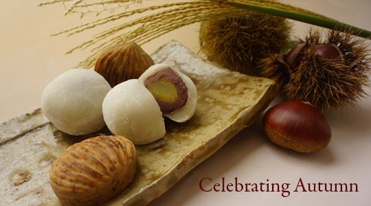

|

|  |
|
Celebrating the Flavors of Autumn
Sushi can be prepared with either brown or white rice. It is often prepared with raw seafood, but some varieties of sushi use cooked ingredients, and many others are vegetarian. Sushi is often served with pickled ginger, wasabi, and soy sauce. Daikon radish is popular as a garnish |
|
WELCOME TO SAVORY JAPAN
Whether you're a beginner making sushi for the first time, an enthusiast looking for the best place to buy imari ware in Kyoto, or are just curious about the origin of miso you're in the right place. Join us on Japan on Facebook. |